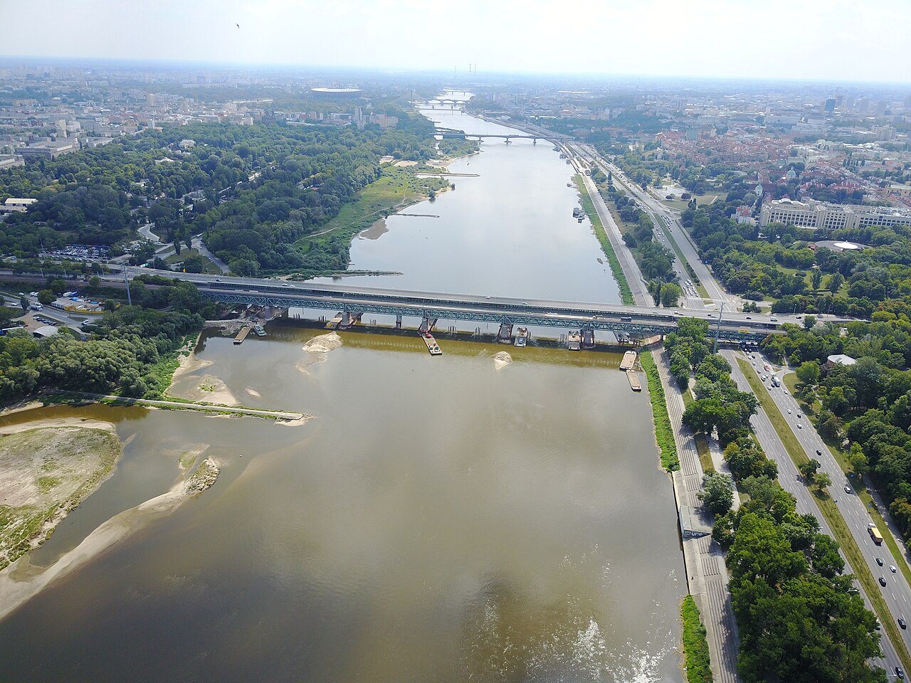
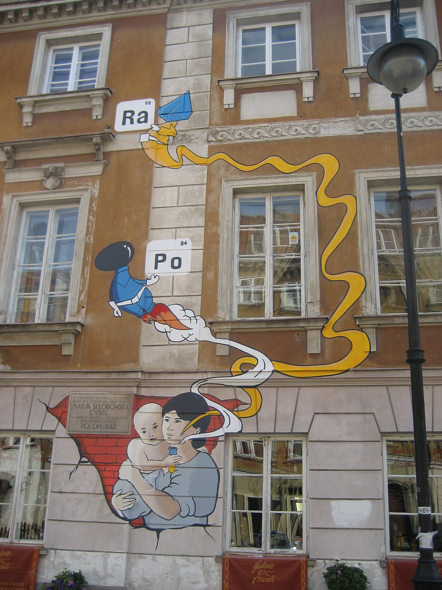
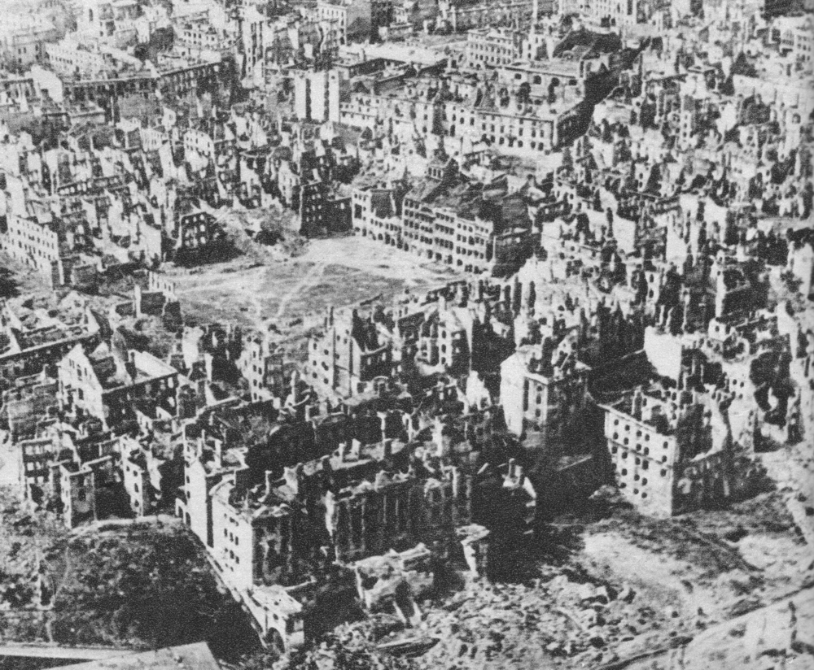
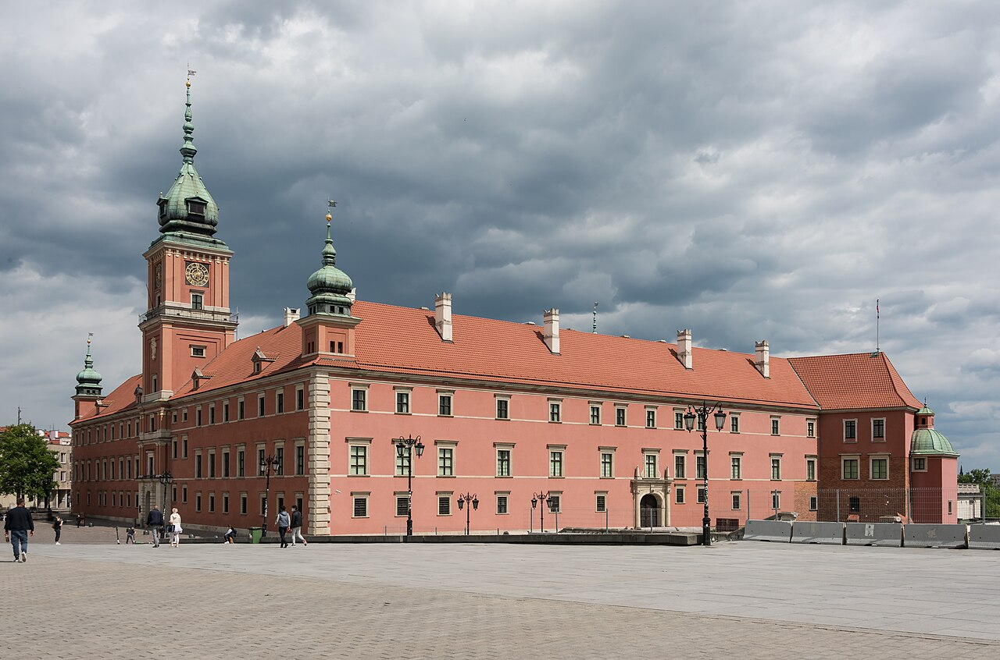
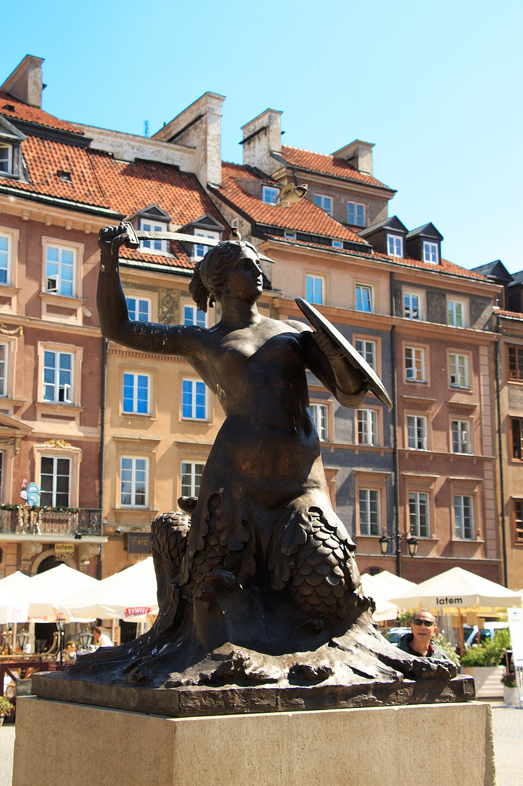

마리 퀴리가 자란 바르샤바는 차르의 검열 속에서도 폴란드어로 학문을 가르치는 비밀 학교 "플로팅 대학(Uniwersytet Latający)"이 운영되던 도시였다. 그는 거기서 청소년기 교육을 받았고, 24세에 파리로 떠났다.
그의 생애는 폴란드 디아스포라의 한 전형이다 — 분할기에 외국에서 자기 분야의 정점에 올랐고, 그 정점에서 조국의 이름(폴로늄)을 인류에 새겼다.
한 번 사라졌다가 다시 쌓아 올린 도시. 4회까지의 세 강의가 폴란드 전반을 봤다면, 5회는 한 도시 안으로 깊이 들어간다. 구시가지의 벽돌이 왜 너무 깨끗한가 — 이 한 질문에서 시작한다.
유럽의 다른 옛 수도들 — 파리·로마·빈·프라하 — 의 구시가지를 걸으면 발 밑의 돌이 진짜로 수백 년 된 돌이라는 감각이 있다. 바르샤바는 다르다. 바르샤바 구시가지의 17세기풍 건물은 — 거의 모두 — 1950년대에 다시 쌓아 올린 것이다.
이 사실 하나가 바르샤바 여행의 모든 것을 결정한다. 다른 도시에서는 "옛것이 그대로 남아 있어서" 감동하지만, 바르샤바에서는 "옛것이 다시 만들어져서" 감동한다. 재건이 곧 도시의 정체성이라는, 유럽에서도 거의 유일한 경우.
오늘 우리는 그 정체성의 네 박자를 본다 — ① 바르샤바라는 도시 자체 → ② 1944년의 죽음 → ③ 재건의 시기 → ④ 오늘의 구역별 풍경.

다른 도시는 시간을 이겨낸 것을 보여준다.
바르샤바는 시간을 다시 만들어낸 것을 보여준다. — 5회차의 큰 그림
한 도시를 이해하려면 그 도시가 언제, 왜, 어떻게 그 자리에 오게 됐는지를 봐야 한다.
바르샤바는 폴란드의 거의 한가운데, 비스와(Wisła) 강이 남에서 북으로 흐르는 자리에 있다. 1회차에서 본 그 강 — 폴란드 평원을 가로지르는 1,000km짜리 폴란드 최장 강 — 의 거의 중간 지점이다. 강 좌안(서안)이 도심, 우안(동안)이 프라가(Praga)로 불리는 옛 변두리.
인구는 약 180만(광역 약 320만). 크라쿠프(약 80만), 우치(약 65만), 브로츠와프(약 65만)에 비해 두 배 이상 크다. 그러나 다른 유럽 수도들 — 파리·런던·베를린·빈 — 과 비교하면 작은 편이다.
바르샤바가 폴란드 수도가 된 것은 의외로 늦다. 1596년 — 4회차에서 본 그 옛 수도 크라쿠프에서 — 야기에우워 왕조의 마지막 왕 지그문트 3세 바사(Zygmunt III Waza)가 수도를 바르샤바로 옮겼다. 이유는 단순했다 — 1569년 폴란드-리투아니아 연방이 출범하면서 영토의 동쪽으로 무게가 옮겨갔고, 바르샤바가 두 나라 사이의 더 중심적인 자리였다.
왕궁이 옮겨오고, 17세기 동안 바르샤바는 폴란드의 정치·문화·외교의 중심으로 빠르게 성장했다. 6회차 가이드 투어의 종착점이 될 왕궁 광장의 지그문트 기둥이 그를 기리는 17세기 기념비다.
2회차에서 본 분할 시기, 바르샤바는 러시아령 폴란드(이른바 "콩그레스 폴란드")의 수도로 남았다. 그러나 차르의 통치 아래 폴란드 시민권은 제한되었고, 1830·1863 두 봉기의 무대가 되었다. 이 시기 바르샤바에 살았던 유명 인물 중 한 명이 — 3회차에서 본 — 마리아 스크워도프스카(마리 퀴리)다. 1867년 생, 24세까지 바르샤바에서 자랐다.

마리 퀴리가 자란 바르샤바는 차르의 검열 속에서도 폴란드어로 학문을 가르치는 비밀 학교 "플로팅 대학(Uniwersytet Latający)"이 운영되던 도시였다. 그는 거기서 청소년기 교육을 받았고, 24세에 파리로 떠났다.
그의 생애는 폴란드 디아스포라의 한 전형이다 — 분할기에 외국에서 자기 분야의 정점에 올랐고, 그 정점에서 조국의 이름(폴로늄)을 인류에 새겼다.
1918년 폴란드 독립 후 바르샤바는 다시 자유로운 폴란드의 수도가 되었다. 2공화국 약 20년 동안 바르샤바는 빠르게 현대화되었다 — 대학·박물관·공원·전차·라디오 방송이 자리를 잡았고, 인구도 약 130만까지 늘었다(전쟁 직전 1939년 기준). 그 인구의 약 1/3, 약 35만 명이 유대인이었다 — 뉴욕 다음으로 세계에서 두 번째로 큰 유대인 도시였다.
그 시기 바르샤바가 정점에 있을 때 — 1939년 9월이 왔다.
2회차에서 우리는 폴란드의 1939–45를 봤다. 5회는 그 5년이 한 도시 위에서 정확히 무엇을 했는지를 본다.
1939년 9월 1일 폴란드 침공이 시작되었고, 9월 8일 독일군이 바르샤바에 도달했다. 9월 27일까지 약 3주 동안 도시는 포위·폭격을 받았고, 약 25,000명이 사망했다. 9월 28일 바르샤바는 항복했다. 도시 건물의 약 12%가 이미 이 단계에서 파괴되었다.
점령기 첫 사건이 1940년 10월, 도시 북서부 약 3.4km² 면적에 만들어진 바르샤바 게토(Getto Warszawskie)다. 바르샤바와 인근 지역의 유대인 약 40만 명 이상이 이 좁은 구역에 강제 수용되었다. 게토 안에서만 1940–42 동안 약 10만 명이 굶주림·질병으로 사망했다.
1942년 여름, 독일은 게토에서 트레블린카 절멸수용소로의 대규모 이송을 시작했다. 약 두 달 동안 25만 명 이상이 트레블린카에서 살해되었다.
1943년 4월 19일, 게토에 남아 있던 유대인들이 무력 저항을 시작했다 — 바르샤바 게토 봉기(Powstanie w getcie warszawskim). 약 7,000명이 보름간 저항했고 거의 모두 사망했다. 봉기 후 독일은 게토 전체를 — 건물 하나하나를 — 폭파했다. 1943년 5월, 게토는 평지가 되었다.

오늘 바르샤바 북서부 무라누프(Muranów) 지구가 옛 게토 자리다. 1948년 그 자리에 세워진 게토 영웅 추모비가 있고, 2013년에는 그 옆에 폴린 박물관(POLIN) — 폴란드 유대인 1,000년 역사를 다루는 박물관 — 이 개관했다.
오늘날 무라누프 거리는 평지에서 다시 쌓은 아파트 단지처럼 보이지만, 거리 곳곳에 옛 게토 경계선과 추모 표지가 박혀 있다. 무라누프를 걷는 것은 — 1회차에서 본 — 도시의 보이지 않는 층을 걷는 것이다.

2회차에서 본 1944년 8월 1일 오후 5시 — 폴란드 국내군 약 40,000명의 일제 봉기. 소련 적군이 비스와 강 동안까지 와 있던 시점에, 자력으로 도시를 해방하려 한 작전이었다. 그러나 적군은 강을 건너지 않았고, 봉기군은 63일 동안 단독으로 싸웠다.
10월 2일 항복. 그러나 진짜 비극은 그 다음에 왔다 — 독일군은 항복한 봉기군과 민간인 약 60만 명을 도시 밖으로 추방했고, 그 다음 약 3개월 동안 도시를 의도적으로 파괴했다. 폭파 부대(Brand- und Sprengkommando)가 건물 하나하나에 폭약을 설치하고 폭파했다. 도서관·기록보관소·박물관·교회를 우선 파괴했다.
1945년 1월 17일 적군이 비스와 강을 건넜을 때, 바르샤바는 인구 약 50만 명이 남아 있었고(1939년 130만에서), 건물의 약 85%가 파괴되어 있었다. 일부 학자는 도시 면적 기준 95% 이상으로 추산한다.
유럽 어떤 도시도 — 광역폭격을 받은 드레스덴조차 — 이 정도의 체계적·의도적 파괴를 겪지 않았다. 바르샤바는 "도시 살해(urbicide)"의 모범 사례로 도시계획사·전쟁법 교과서에 남아 있다.
한 도시가 85% 사라졌을 때 사람들이 무엇을 할까. 어떤 도시는 새로운 곳에서 다시 시작했을 것이다. 바르샤바는 그 자리에서 옛 모습을 다시 쌓기로 했다.
전쟁 후 폴란드 정부는 한 가지 결정을 두고 격론했다. 바르샤바를 — 정부 청사가 있던 도시를 — 새로운 자리에 새로운 양식으로 지을 것인가, 아니면 그 자리에 옛 모습으로 복원할 것인가. 새로 짓는 것이 훨씬 빠르고 저렴했다. 그러나 결정은 옛 모습으로의 복원이었다.
이유는 폴란드인의 자기 인식에 있었다 — 독일이 도시를 파괴하려 한 것은 폴란드의 기억을 파괴하려 한 것이고, 그렇다면 그 기억을 정확히 그 자리에 정확히 그 모습으로 되돌리는 것이 가장 강한 답이었다.
1945년부터 도시 곳곳의 유물·고문서·시민들의 사진 앨범에서 옛 도시의 시각 자료가 모였다. 가장 중요한 자료가 두 가지였다 — 베르나르도 벨로토(Bernardo Bellotto, "카날레토")가 1760년대에 그린 약 26점의 바르샤바 풍경화, 그리고 1939년 전쟁 직전 바르샤바 폴리테크닉 학생들이 측량해 둔 도시 건축물 도면.
이 자료를 토대로 — 1945–1955 약 10년에 걸쳐 — 구시가지 전체가 복원되었다. 광장의 건물 색까지 18세기 카날레토의 그림을 참고로 결정되었다. 1980년 유네스코 세계유산 등재는 이 작업의 의미에 세계가 답한 것이었다. "재건된 도시가 유산이 될 수 있는가"라는 질문에 — 그 자체가 인류의 유산이라는 답이 나왔다.

가장 늦게 — 그리고 가장 어렵게 — 재건된 것이 왕궁이었다. 1944년 8월 폭파로 완전히 사라졌고, 사회주의 정권은 "봉건 잔재"라며 재건을 미루었다.
그러나 1971년 시민 압력에 의한 모금이 시작되었고, 외부 모금까지 합쳐 1984년 외관 복원이 완성되었다. 내부 복원은 1988년. 왕궁 재건은 폴란드 시민의 자발적 운동의 산물이지 사회주의 정권의 업적이 아니다는 것이 폴란드인의 자긍심이다.

재건의 시기 한가운데에 — 모순적인 한 건물이 도시 한가운데 솟았다. 1952–55년 소련이 폴란드에 "선물"로 지은 문화과학궁전(PKiN). 모스크바 7자매 마천루와 같은 스탈린 시기 건축 양식이다.
높이 237m, 30층. 당시 폴란드 최고층이었고, 지금도 두 번째로 높다. 폴란드인들에게 이 건물은 — 오랫동안 — "받지 않을 수 없었던 선물"이었다. 1989년 이후 철거 논의도 있었지만 결국 살아남아 지금은 콘서트홀·박물관·시계대로 사용된다.
폴란드인의 농담 하나 — "바르샤바에서 가장 좋은 전망은 문화과학궁전 꼭대기다. 거기서는 문화과학궁전이 안 보이니까."
1989년 이후 바르샤바는 또 한 번의 변화를 겪고 있다. 사회주의 시기의 단순한 콘크리트 건물들 사이로 — 1990년대 이후 — 유리·강철의 현대 고층 빌딩들이 솟아났다. 오늘 도심을 지나면 1950년대 사회주의 건축, 17세기 재건 건물, 21세기 마천루가 한 시야각에 들어온다. 시간이 층층이 쌓인 것이 아니라 나란히 펼쳐진 도시다.
바르샤바 첫 여행자가 알아두면 좋은 다섯 구역. 6회 가이드 투어 루트의 사전 지도다.

위 Beat 3에서 본 1950년대 재건의 정점. 구시가지 광장(Rynek Starego Miasta)을 중심으로 17세기풍 건물들이 광장을 사방에서 둘러싼다. 광장 중앙에 바르샤바의 상징인 인어상(Syrenka)이 칼과 방패를 들고 서 있다.
구시가지 북쪽 끝에 바르비칸(Barbakan)이라는 옛 성벽 방어 시설이 있고, 그 너머가 신 시가지(Nowe Miasto). 6회 가이드 투어의 중반이 이 구간이다.
구시가지 남쪽으로 펼쳐진 도시 중심부. 문화과학궁전이 있는 곳이자, 중앙역(Warszawa Centralna)·바르샤바 대학·국립박물관·쇼팽 박물관·국립 오페라가 모인 도시의 행정·문화 중심. 폴란드 1차 여행자의 호텔이 가장 많이 잡히는 구역이다.
이 구역의 중심 도로가 왕의 길(Trakt Królewski)이라 불리는 — 왕궁에서 시작해 남쪽으로 와지엔키 공원까지 약 11km 이어지는 — 폴란드 왕들의 옛 행차로다. 그 첫 구간이 구시가지에서 시작되는 크라코프스키에 프셰드미에시치에(Krakowskie Przedmieście)와 그 다음의 노비 시비아트(Nowy Świat) 거리. 6회 가이드 투어의 핵심 구간이 여기다.
비스와 강 동안의 옛 변두리. 흥미로운 사실 하나 — 프라가는 1944년 파괴를 거의 피했다. 1944년 9월 적군이 강 동안까지 진격했을 때 이미 그곳을 통과했기 때문이다. 따라서 프라가에는 — 도시 다른 곳과 달리 — 진짜 19세기 건물이 그대로 남아 있다.
오랫동안 노동자·서민 지구였으나 2000년대 이후 갤러리·카페·디자이너 부티크가 들어서며 "바르샤바의 윌리엄즈버그"로 떠올랐다. 현대 폴란드 영화·예술 신(scene)의 중심지 중 하나. 첫 여행에서 시간 있으면 한나절 들러보는 게 좋다.
구시가지 북서쪽, 옛 바르샤바 게토가 있던 자리. 게토 봉기 후 1943년 독일이 완전히 평지화한 자리에 — 사회주의 시기 1948년부터 — 노동자 아파트 단지가 그대로 옛 게토 잔해 위에 세워졌다. 한 도시가 다른 도시의 무덤 위에 세워진 거의 유일한 자리다.
이 자리에 2013년 폴린 박물관(POLIN, Muzeum Historii Żydów Polskich)이 개관했다. 폴란드 유대인 1,000년의 역사를 다룬다 — 다민족 연방 시기, 분할기, 홀로코스트, 그리고 1968년 추방까지. 바르샤바 박물관 중 가장 강력한 한 곳.
도시 중심부 남쪽 약 30분 거리에 와지엔키 공원(Park Łazienkowski)이 펼쳐져 있다. 18세기 폴란드 마지막 왕 스타니스와프 아우구스트의 여름 궁전과 정원. 공원 안의 쇼팽 동상 앞에서 매년 5월–9월 일요일 무료 쇼팽 콘서트가 열린다.
그 더 남쪽으로 가면 17세기 얀 3세 소비에스키의 별궁이었던 빌라누프 궁전(Pałac w Wilanowie) — "폴란드의 베르사유"라고 불리는 바로크 궁전. 첫 여행에서 시간 여유 있으면 반나절 코스로 추천.

구시가지 서쪽 약 2km. 2004년 — 봉기 60주년에 맞춰 — 옛 발전소 건물을 개조해 개관한 박물관. 63일의 봉기를 시간순으로 따라가는 전시가 강렬하다. 폴린 박물관과 함께 바르샤바에서 꼭 가야 할 두 박물관 중 하나.
6회 가이드 투어의 클라이맥스 추천 장소이기도 하다 — 게토 영웅 추모비에서 끝나는 메인 루트의 연장으로.
지난 다섯 회를 통해 우리는 폴란드를 일곱 가지 자리에서 봤다 — 좌표·역사·문화·도시·그리고 바르샤바라는 한 도시의 죽음과 부활. 이제 남은 것은 실제로 걷는 일이다.
다음 6회 — 마지막 강의 — 는 바르샤바를 처음 가는 사람의 손에 한 장의 지도를 쥐어준다. 중앙역에서 시작해 구시가지를 지나 게토 추모비로 이어지는 한 루트. 도보 약 6km, 4–5시간. 그 루트를 따라가며 — 1회부터 5회까지 본 모든 것이 — 발 밑의 돌과 건물의 벽돌에 어떻게 새겨져 있는지를 확인한다.
한 도시를 가장 깊이 아는 방법은
그 도시를 자기 발로 걷는 것이다. — 5회차의 결론, 6회차의 시작